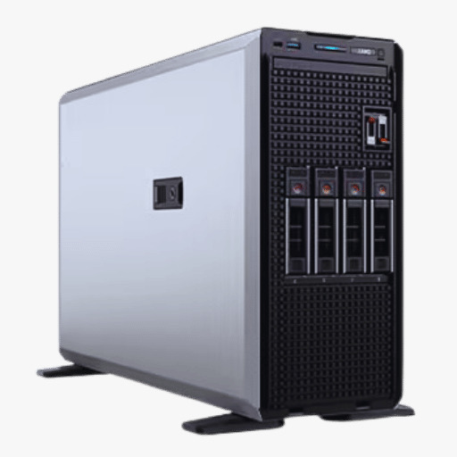

2009: El "Cuarto de Servidores"
Antes de la nube y la virtualización, la "inteligencia" de la Universidad Central vivía en condiciones críticas. El 2009 fue el año del diagnóstico: la evaluación del CONEA (Consejo Nacional de Evaluación y Acreditación) evidenció brechas tecnológicas severas, revelando que la universidad operaba con un cuarto de servidores adaptado y no con un Data Center bajo estándares internacionales.
Ficha de Situación: Riesgo Operativo
- 📉 Estado: Crítico. Hardware sin redundancia y alta vulnerabilidad física.
- ❌ Equipamiento: Servidores dispersos tipo torre (IBM Netfinity / Compaq).
- 💰 Impacto: Altos costos de mantenimiento correctivo y "caídas de sistema" frecuentes.
- 👤 Gestión: Dirección de Computación e Informática (Predecesora de la actual DTIC).
"Aunque la UCE se ubicó en la Categoría A, el informe señaló la urgencia de modernizar la infraestructura de soporte académico y administrativo, impulsando la transición de sistemas legados a plataformas integradas."
1. ¿Cómo era el "Antiguo Data Center"?
- Infraestructura Inadecuada: Espacio físico adaptado en el Edificio Administrativo sin suelo falso técnico (cableado expuesto).
- Climatización Doméstica: Uso de aires acondicionados tipo "Split" residenciales, insuficientes para la carga térmica de los servidores.
- Energía: Carencia de sistemas de respaldo (UPS) de larga duración para el 100% de la carga crítica.

Representación.- Servidores tipo torre utilizados antes de la implementación de racks y blades.
2. Equipamiento: Los "Dinosaurios" Tecnológicos
A diferencia de los servidores Blade modernos, en 2009 la universidad dependía de torres físicas independientes para cada servicio (Notas, Web, Nómina), lo que generaba un uso ineficiente de energía y espacio.
| Componente | Estándar Tecnológico (2009) |
|---|---|
| Servidores |
Arquitectura x86 (Torres físicas). Modelos típicos: IBM Netfinity, HP ProLiant ML. |
| Almacenamiento |
Discos internos SCSI/SAS de baja capacidad. Sin redes de almacenamiento centralizado (SAN) de alto rendimiento. |
| Respaldos |
Manuales (Cinta): Dependencia de unidades de cinta magnética (LTO/DAT) y operación manual diaria. |
3. El Software Heredado (Legacy)
La gestión académica dependía de sistemas "Cliente-Servidor" (desarrollados en FoxPro o Visual Basic), que requerían instalación en cada PC y no permitían acceso web remoto para los estudiantes.
> ODBC_DRIVER_FAIL: \SERVER_ADMIN\NOTAS_DB
> REINTENTAR CONEXIÓN? (S/N)_ █
*Simulación de errores de conectividad comunes en sistemas no web.
Los detalles sobre la precariedad del "antiguo data center" se validan retrospectivamente en los informes técnicos de la UCE generados para el proyecto del Nuevo Data Center (2016-2017).
- Paper: Diseño e implementación de un centro de datos en la UCE (Cadena & Enríquez, 2017) - Documenta la situación previa ("As-Is") para justificar la nueva inversión.
- Informe CONEA 2009 (Evaluación de Desempeño Institucional)